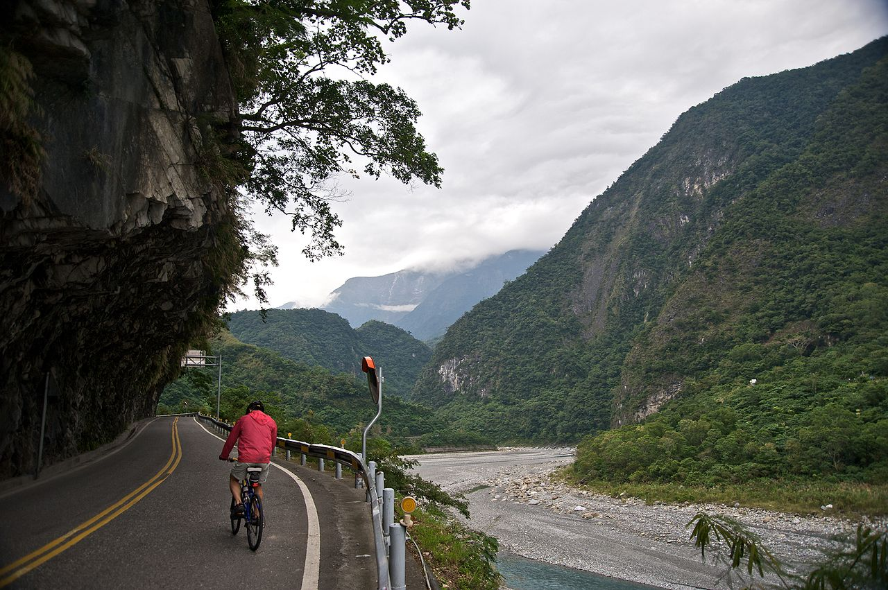

About biking
Cycling, also called bicycling or biking, is the use of bicycles for transport, recreation, exercise or sport.[1] Persons engaged in cycling are referred to as "cyclists", "bikers", or less commonly, as "bicyclists".Beyond simply riding, another skill is riding efficiently and safely in traffic. One popular approach to riding in motor vehicle traffic is vehicular cycling, occupying road space as car does. Alternately, in countries such as Denmark and the Netherlands, where cycling is popular, cyclists are sometimes segregated into bike lanes at the side of, or separate from, main highways and roads. Many primary schools participate in the national road test in which children individually complete a circuit on roads near the school while being observed by testers.
Apart from two-wheeled bicycles, "cycling" also includes the riding of unicycles, tricycles, quadracycles, recumbent and similar human-powered vehicles (HPVs).

Bicycles were introduced in the 19th century and now number approximately one billion worldwide. They are the principal means of transportation in many parts of the world.Cycling is widely regarded as a very effective and efficient mode of transportation optimal for short to moderate distances.Many road bikes, along with mountain bikes, include clipless pedals to which special shoes attach, via a cleat, enabling the rider to pull on the pedals as well as push. Other possible accessories for the bicycle include front and rear lights, bells or horns, child carrying seats, cycling computers with GPS, locks, bar tape, fenders (mud-guards), baggage racks, baggage carriers and pannier bags, water bottles and bottle cages.
Benifits of biking
Bicycles provide numerous benefits in comparison with motor vehicles, including the sustained physical exercise involved in cycling, easier parking, increased maneuverability, and access to roads, bike paths and rural trails. Cycling also offers a reduced consumption of fossil fuels, less air or noise pollution, and much reduced traffic congestion. These lead to less financial cost to the user as well as to society at large (negligible damage to roads, less road area required).Many cycling clubs hold organized rides in which bicyclists of all levels participate. The typical organized ride starts with a large group of riders, called the mass, bunch or even peloton. This will thin out over the course of the ride. Many riders choose to ride together in groups of the same skill level to take advantage of drafting.
By fitting bicycle racks on the front of buses, transit agencies can significantly increase the areas they can serve.
Among the disadvantages of cycling are the requirement of bicycles (excepting tricycles or quadracycles) to be balanced by the rider in order to remain upright, the reduced protection in crashes in comparison to motor vehicles,[10] often longer travel time (except in densely populated areas), vulnerability to weather conditions, difficulty in transporting passengers, and the fact that a basic level of fitness is required for cycling moderate to long distances.The price of a new bicycle can range from US$50 to more than US$20,000 (the highest priced bike in the world is the custom Madone by Damien Hirst, sold at $500,000 USD[13]),[14] depending on quality, type and weight (the most exotic road bicycles can weigh as little as 3.2 kg (7 lb)[15]). However, UCI regulations stipulate a legal race bike cannot weigh less than 6.8 kg (14.99 lbs). Being measured for a bike and taking it for a test ride are recommended before buying.